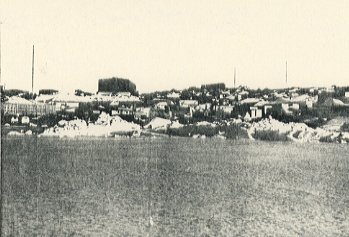
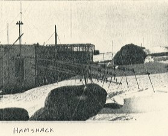
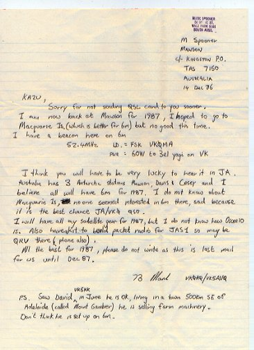

話題の局・QSL
VK0AQ・Antarctica


VKが52MHz帯に出ていた当時からアクティブにQRVしていたVK5AVQ・Mark。 1987年にオーストラリアの南極基地・モーソン(Mawson)からVK0AQで6m を運用していた。このQSLはAO-10のサテライトでQSOしたときのもの。 QSLと共にビーコン局・VK0MAの情報を南極基地から直接郵送してくれた。


モーソン基地の全景(左)と無線棟(手前のアンテナはサテライト用)
=写真はモノクロのコピー=

VK0AQ/VK5AVQからの手紙。